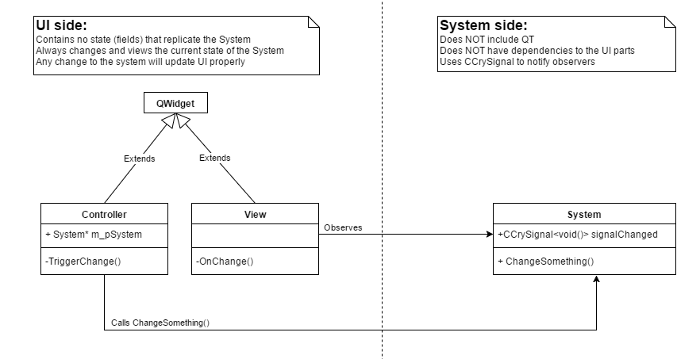

Patterns
This concept and its many different variants is the most important notion you need to understand to produce good UI code.
If you apply this pattern everywhere you win, it's not more complicated than this. If however, you break this basic design, you will make life very complicated for those who come after you.

Behavior:
- If the UI changes: TriggerChange() => ChangeSomething() => signalChanged => OnChange() which updates the view
- If the system changes: signalChanged => OnChange() which updates the view
- In every case, the view is always up to date with the model (system)
Analysis:
The system has no dependencies to UI. This is good because we can change the UI without changing the system. UI changes are a reality, make everyone’s life better and try to keep the UI code self-contained.
The UI always reflects the state of the system. The UI has no state itself. This means the UI and the system are always in sync.
All changes are taking effect on the system. This means whether changes come from the frontend or backend, or whether there are several frontends, or sources of change don't matter. The UI(s) are always up to date.
Observer patterns don’t form a loop, notifications only go one way which starts at the system and end at the view. Observer loops otherwise known as notification hell are extremely hard to fix and are always a symptom of bad design.
Prefer using CCrySignal wherever you need to observe something. This is our own implementation of signals (see Qt signals, or boost::signal) which is much more flexible than writing your own observer system. Do not use a virtual interface for observers, it’s 2016, use a functional approach, hence CCrySignal.
UI Anti-Patterns
This is in the "getting started" section because of common misconceptions and generally bad approach from programmers that are not used to modern UI programming. The goal of this is educational, but it can also help recognize bad patterns in your own code.
Dependency breach
//Including UI headers where they shouldn't be is a bad sign#include “SomeUIClass.h” void SetValue(const Value& val){ m_value = val; //This should not have a direct reference to the UI, but should simply call a signal to notify potential observers m_pUi->SetValue(val);} |
Solutions:
Encapsulate the fields that the UI reflects in setters/getters.
Use CCrySignal to notify observers within these accessors.
Observers can be UI or something else, and it shouldn’t matter to your system.
Just make sure it is observable, this will make your system able to be used by any UI system or another system in the future.
Notification loops
Notification loops create the need to guard for them. Here is a pseudocode example:
//Called by UIvoid SetValueFromUi(const Value& val){ m_value = val; m_bDoNotNotify = true; //this will trigger the signal value changed which will call OnValueChanged() m_system->SetValue(val); m_bDoNotNotify = false;} //Callback registered to signal on m_systemvoid OnValueChanged(const Value& val){ //avoid updating value again here since we already did when the action changed if(m_bDoNotNotify) return; m_value = val;} |
Problems:
- The UI is actually displaying the value of m_value. However, the system has its own value.
- Imagine that SetValue() is not a simple setter but checks for the validity of the value, this will make the UI not be in sync with the system and cause problems.
- Because of the possibility of notification loops, you need all sorts of code to handle a change differently depending on where it comes from. The above example is a simple one, but it gets a lot messier.
- This architecture will become less and less maintainable over time and lead to horrible headaches. Please refactor your code to fit the recommended architecture.
Solutions:
- Do not store a copy of the state (in this case m_value is unnecessary and should always reflect the state of the model).
- Set the changes on the system, let the UI update based on changes.
- Make your setters (SetValue) only call the signal when the value is actually changed. This removes stress on the entire program.
- Make sure signals and notifications only propagate one way, from the system to the UI, i.e. from the model to the view.